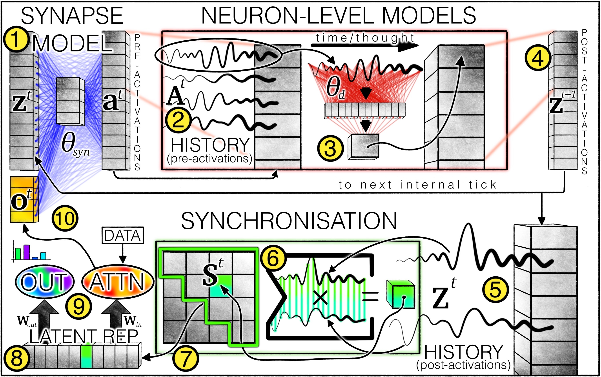
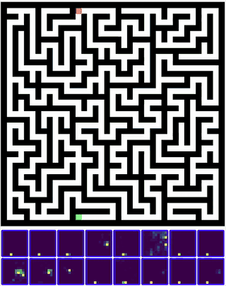
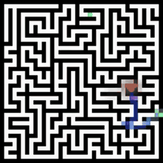

Tinkering with CTMs
CTM == Continuous thought machines
This is a rather recent paper by Sakana AI, making strides towards brain-inspired neural architectures. As of late, I've enjoyed playing around with models inspired by the "real world". They propose some really cool ideas!
The novelty of CTM is the introduction of time as fundamental part of model identity, and not something of an afterthought (with concepts like Time2Vec). CTMs think in "ticks", growing confident overtime as they grok the problem statement.

Architecturally they propose 2 new ideas -
- Neuron Level Models - Each "neuron" is actually a deep MLP, which takes new inputs along with a window of its past activations (as to reflect on its decisions).
- Latent representation via synchronization - The actual representation used for solving the task is derived via synchronization of Neurons.
Input data from the problem statement almost feels like an afterthought - and is introduced as queries to an attention block.

They go into a lot of depth in the paper about how this stuff comes together, and how they are able to induce reasoning to solve tasks such as mazes solely as an artifact of architecture. Pretty cool!
It even learns how to solve mazes of size greater than it was exposed to in the training set.

Neurons, connect?
I was curious as to why neurons did not have a way of passing around information. If one neuron fires, what if it was able to tell the other to fire a little harder? This got me looking into what "muscle memory" really is.
Muscle Memory happens when repeated, deliberate practice enforces inter-neuronal connections. Spike-timing-dependent-plasticity (STDP) is the process that enables it.
The obvious question was - can I simulate this?
I got to work to understand what muscle memory in maze solving might look like. Asking a couple people to solve mazes -
- People with lower hand-eye coordination were able to craft shorter traces towards the solutions.
- People with better coordination (mostly video game enthusiasts) were able to take longer strides towards the solution.
This got me thinking - what if a CTM with muscle memory is able to solve a maze in fewer steps than a regular CTM?
I had a lot of failed attempts, which I won't post about here, but I got it to work! I added a weight matrix W which held strength values - how much does Neuron i's output affect Neuron j.
My solution
I defined an update function for this matrix - The weight increases if Neuron i fired at a tick just before Neuron j; as simple as that.
Equation:
$W_{ij}(t+1) = decay \cdot W_{ij}(t) + \alpha \cdot a_i(t-1) \cdot a_j(t)$
Where W is the weight matrix, decay is a biology inspired temporal phenomenon of neuronal connectivity decaying over time, Alpha is the learning rate and $a_i$ and $a_j$ are Neuronal activations at timestamps t-1 and t.
But how should this weight matrix be utilized by a Neuron?
Equation:
$a'_j = a_j + gate_j \cdot \sum_i \left(a_i \cdot W_{ij}\right)$
A rather easy equation. I add a learnable $gate_j$ for each Neuron to either fully learn or reject all incoming signal from other neurons - this is not learnable at a Neuron-Neuron level, but only at an overall per Neuron level - I did not want to leave the learning in backprop's hands. The idea is to make this interpretable.
Training this model, I was able to actually see the number of steps to solve a maze drop significantly - especially for harder mazes that required more reasoning!

GIF of a maze significantly harder than the training solution being solved by Muscle Memory induction in CTMs ^
Of course this analysis requires more deep diving - but this was a great weekend project. Thanks for reading!